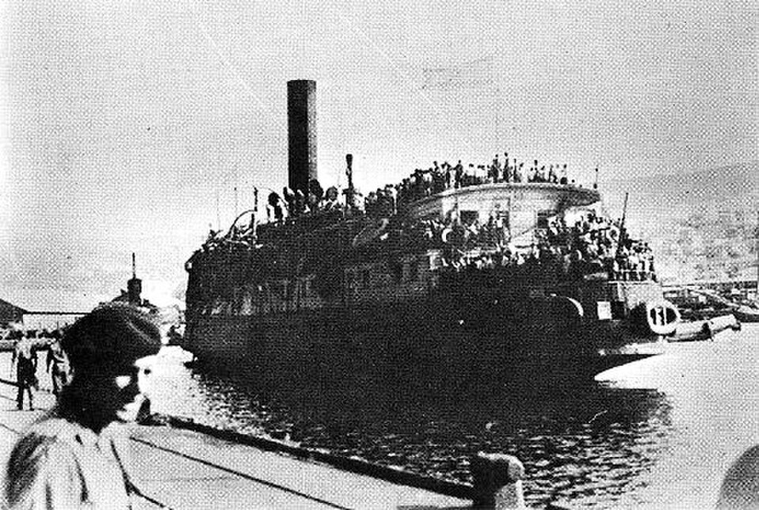
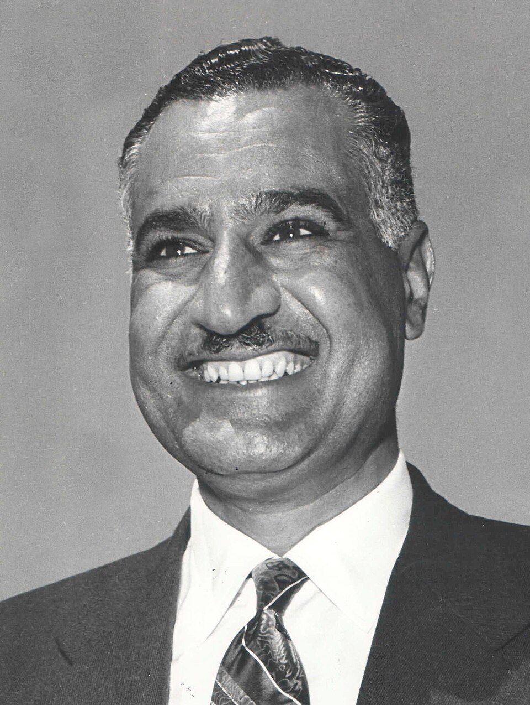

Key Topic 1: The birth of the state of Israel, 1945–1963
Conflict in the Middle East, 1945–1995
Printable Workbook
| Key Enquiry Focus | Hinge Questions (Self-Assessment) |
|---|---|
| KT1.1: The End of the British Mandate and the Creation of Israel, 1945–1949 |
|
| KT1.2: The Aftermath of the 1948–49 War |
|
| KT1.3: Increased Tension, 1955–1963 |
|

Task: Fill in the blanks in the summary below using the correct words from the word bank.
The concept of ______________________ is best defined as a movement that emerged in the late 19th century advocating for the establishment of a jewish homeland in palestine.. The concept of ______________________ is best defined as hostility, prejudice, or discrimination directed against jewish people, a major driver of jewish migration to palestine.. The concept of ______________________ is best defined as a 1917 statement by the british government expressing support for the establishment of a 'national home for the jewish people' in palestine.. The concept of ______________________ is best defined as the league of nations mandate granted to britain in 1920 to administer palestine following the collapse of the ottoman empire.. The concept of ______________________ is best defined as a british policy paper that severely restricted jewish immigration and land purchases in palestine, angering the jewish community.. The concept of ______________________ is best defined as the main jewish paramilitary organization in mandatory palestine, which later formed the core of the israel defense forces (idf).
Following the end of the Second World War in 1945, Great Britain found itself trapped in an increasingly untenable position within its League of Nations Mandate of Palestine. Under the terms of the Mandate, Britain was bound by a "dual obligation": on one hand, to establish a "national home" for the Jewish people (in line with the 1917 Balfour Declaration), and on the other, to safeguard the civil and religious rights of the existing Arab majority. As the full horrors of the Holocaust were revealed to the world, the international pressure for Jewish statehood became immense. In 1945, Zionist leaders gathered at a conference in London to demand the immediate creation of a Jewish state in Palestine, hoping that Britain would facilitate the resettlement of hundreds of thousands of Holocaust survivors currently languishing in European Displaced Persons (DP) camps.
Q2. What was the 'dual obligation' that Britain faced under the League of Nations Mandate of Palestine?
However, the Arab population—who formed the clear majority of Palestine's inhabitants—vehemently opposed this prospect. They resented not being granted independence at the end of the First World War and were furious that they had never been consulted regarding the mass resettlement of another population on their ancestral lands, which they had inhabited for over 1,500 years. Britain's newly elected Labour government, led by Prime Minister Clement Attlee and Foreign Secretary Ernest Bevin, immediately faced a crisis. Bevin set a strict immigration quota of just 1,500 Jewish immigrants per month. He did this for two primary reasons: 1. He calculated that allowing a massive influx of Jewish refugees would trigger an uncontrollable civil war between Arabs and Jews. 2. Britain was economically dependent on maintaining close, friendly relations with oil-rich Arab states across the Middle East. These states strongly opposed Zionist ambitions and would not tolerate unrestricted Jewish immigration.
Q3. Identify two reasons why Foreign Secretary Ernest Bevin set a strict immigration quota of 1,500 Jewish immigrants per month.
Angered by Bevin's strict immigration restrictions, Zionist organizations in Palestine abandoned the wartime truce they had maintained with the British. In October 1945, the moderate militia (the Haganah) joined forces with extreme paramilitary splinter groups—the Irgun (led by Menachem Begin) and the Lehi (also known as the Stern Gang). Together, they launched a coordinated, violent campaign known as the Jewish Insurgency to force a British withdrawal. While the moderate Haganah focused primarily on organizing illegal immigration (such as bringing Holocaust survivors on ships like the SS Exodus), the Irgun and Lehi targeted British military infrastructure. On 1 November 1945, the unified factions executed the Night of the Trains, blowing up the Palestine railway system in 153 places to paralyze British communications.
Q4. What was the 'Jewish Insurgency' and which three Zionist groups united to launch it?
Over the next two years, the insurgency intensified. Paramilitary groups bombed bridges, sabotaged oil pipelines, raided military airfields, destroyed radio stations, and assassinated British personnel. In 1946 alone, 73 British troops were killed. To destroy British military morale, Begin’s Irgun engaged in psychological warfare; when two Irgun members were sentenced to caning in December 1946, Begin ordered the kidnapping and public whipping of four British soldiers in retaliation. The single deadliest act of the insurgency occurred on 22 July 1946, when the Irgun bombed the King David Hotel in Jerusalem. The hotel's southern wing housed the central administrative headquarters of the British Mandate and the military command of the British Army in Palestine. Under the cover of midday deliveries, Irgun fighters disguised as Arab workers rolled milk churns packed with TNT into the basement kitchen of the southern wing.
Q5. Describe the deadliest act of the insurgency on 22 July 1946 and explain its intended target.
At 12:37 PM, a colossal explosion ripped through the building, causing the entire six-story southern wing to collapse into rubble. The attack killed 91 people—including 41 Arabs, 28 British officials, 17 Jews, and several other nationalities. The vast majority of the victims were innocent civilians. The sheer scale of the carnage shocked the British public and drew fierce international condemnation, driving a permanent wedge between the moderate Haganah (who condemned the attack) and the militant Irgun. By early 1947, Britain was buckling under the financial and human cost of policing the Mandate, requiring over 100,000 troops to maintain a fragile grip on order. The boiling point of British public tolerance was reached in July 1947 during the 'Sergeants Affair'. In retaliation for the British execution of three Irgun militants, the Irgun kidnapped two young British intelligence sergeants. Despite desperate pleas from their families and a massive manhunt, the Irgun hanged both men and suspended their booby-trapped bodies in an olive grove.
Q6. How did the British public react to the 'Sergeants Affair', and what was the political result?
The public reaction in Britain was explosive. Angry anti-Semitic riots erupted in major British cities. Faced with a war-weary public demanding that the government 'bring the boys home,' Prime Minister Attlee and Foreign Secretary Bevin admitted that Palestine had become ungovernable. Unable to find a compromise that satisfied both Jewish and Arab demands, Britain formally referred the entire problem to the newly created United Nations (UN) in February 1947. The United Nations Special Committee on Palestine (UNSCOP) concluded that the only viable solution was the partition of the territory into separate Jewish and Arab states, with Jerusalem administered as an international zone (corpus separatum) under UN control. On 29 November 1947, the UN General Assembly voted on Resolution 181. The US and Soviet Union both supported partition, hoping to expand their own influence.
Q7. How did the United Nations Partition Plan (Resolution 181) divide the land of Palestine, and what was the reaction of the two communities?
The final vote was 33 in favor, 13 against, and 10 abstentions. Under Resolution 181, the Jewish population (which owned less than 10% of the land and made up only one-third of the population) was allocated 55% of Palestine, including the fertile coastal plains. The Arab majority was allocated just 45% of the land, much of it mountainous and fragmented. While the Zionist leadership accepted the plan with joy, Arab leaders and the Arab League rejected it, declaring that they would fight to prevent the partition of their homeland. The passage of Resolution 181 acted as the catalyst for immediate violence. In December 1947, Britain announced that it would formally terminate its Mandate and withdraw all forces on 15 May 1948. For the remaining five months, British troops stood aside and refused to intervene, leaving Palestine to slide into a bloody, chaotic civil war between Jewish and Arab communities.
In March 1948, the leadership of the Haganah implemented Plan Dalet (Plan D). Many historians argue that Plan D was a defensive military strategy designed to secure the borders of the future Jewish state by taking control of all Arab towns. Other historians argue that Plan D was an offensive operation that intentionally cleared Arab populations from strategic areas, effectively paving the way for the systematic ethnic cleansing of Palestine. The most critical flashpoint of the civil war occurred on 9 April 1948, when approximately 100 fighters from the extremist Irgun and Lehi launched an assault on Deir Yassin, a quiet Arab village. The attack resulted in the brutal massacre of over 100 Arab villagers. Hoping to rally the Arab world to intervene, Arab radio stations broadcast sensationalized, graphic accounts of the atrocities at Deir Yassin. However, this triggered widespread, uncontrollable panic among the Arab population. Believing that they would face the same brutal fate if they stayed, over 250,000 Palestinian Arabs abandoned their homes and fled in terror.
Q8. What was the impact of the Deir Yassin massacre on the Palestinian Arab population in April 1948?
On 14 May 1948, the last British troops departed Palestine. That afternoon, David Ben-Gurion stood in Tel Aviv and officially declared the birth of the sovereign State of Israel. The very next day, on 15 May 1948, five sovereign Arab nations—Egypt, Syria, Jordan, Lebanon, and Iraq—committed their armies to a coordinated invasion of the newly declared state, launching the first official Arab-Israeli War. At the outset, the survival of Israel hung in the balance. Jewish forces were heavily outnumbered, short of heavy weaponry, and faced a multi-front assault. By June, both sides were exhausted, and on 11 June 1948, the United Nations intervened, brokering a crucial one-month truce managed by UN mediator Count Folke Bernadotte.
Israel used this one-month breathing space with exceptional efficiency. Prime Minister David Ben-Gurion dissolved the independent paramilitary groups and unified them into a single, professional national army: the Israeli Defence Forces (IDF). In direct violation of the UN weapons embargo, Israel used massive financial donations to purchase modern military hardware from Soviet-controlled Czechoslovakia, completely neutralizing the Arabs' initial material superiority. When the truce expired on 9 July 1948, the newly equipped IDF immediately went on the offensive, catching the Arab forces completely by surprise. In October 1948, Israel breached the second truce to launch its final offensives. Exhausted and politically divided, the Arab states signed separate Armistice Agreements with Israel between February and July 1949.
Q9. Describe the tactical advantage Israel gained during the first UN truce in June 1948.
The armistice borders of 1949, known as the 'Green Line,' fundamentally redrew the political map. Instead of the 55% allocated under the UN Partition Plan, Israel's victory secured control of 79% of mandate Palestine. An independent Palestinian Arab state ceased to exist. Over 700,000 Palestinians were permanently displaced from their homes, becoming refugees in neighboring states. The historical narrative of this displacement remains deeply contested. Traditional Israeli historiography argued that Palestinians left voluntarily under the orders of Arab leaders who promised they could return after the Jews were defeated. Conversely, Palestinian historians, and later Israeli 'New Historians' utilizing declassified IDF archives, demonstrated that the vast majority were driven out by a combination of deliberate military expulsion (such as Plan Dalet), psychological warfare, and the terror induced by massacres like Deir Yassin. For the Palestinian people, the loss of their homeland and the subsequent refugee crisis is known as the Nakba ('The Catastrophe').
Q10. Explain the conflicting historical views regarding the displacement of over 700,000 Palestinians during the 1948 war.


GCSE examiners award top marks to students who can analyze how multiple, interrelated factors combined to produce the war's final outcome. Israel's victory was not a miracle, but rather the result of distinct military, political, and structural advantages.
The Arab coalition was plagued by deep political rivalries and conflicting territorial ambitions. For example, King Abdullah of Transjordan was primarily interested in annexing the West Bank for his own kingdom, rather than destroying Israel. Although facing a combined Arab population of 41 million, the 650,000 Jews of Israel mobilized their entire society. At the war's start, Israel's combat forces stood at 35,000 (already larger than the active invasion force). By December 1948, the IDF grew to a highly coordinated force of 108,000 troops, vastly outnumbering the fragmented Arab armies.
Historians sharply disagree on the nature of Plan D. Traditional Israeli historians argue it was a purely defensive necessity to secure besieged Jewish settlements before the Arab armies invaded. However, 'New Historians' like Ilan Pappé argue the text of Plan D proves it was a deliberate blueprint for the systematic ethnic cleansing of Palestinian Arabs from the future Jewish state.
Map out the key events chronologically. Read the title and prompt to guide your summary.
Task: Read the key terms and their definitions. Choose two terms and write a single, historically accurate sentence that connects them.
The signing of separate Armistice Agreements between Israel and its Arab neighbors (Egypt in February, Lebanon in March, Transjordan in April, and Syria in July 1949) formally ended the military hostilities of the first Arab-Israeli War but left a highly volatile political landscape. The armistice lines, drawn in green ink on the negotiators' maps and thereafter referred to as the 'Green Line,' fundamentally redrew the geography of the Middle East. Rather than the 55% of mandate Palestine allocated under the 1947 UN Partition Plan, Israel's military victory secured control over 75% to 79% of the territory, including the fertile coastal plains, the Galilee, the Negev Desert, and a secure corridor to West Jerusalem.
The remaining portions of mandate Palestine were occupied by neighboring Arab states, entirely preventing the creation of an independent Palestinian Arab state. The West Bank and East Jerusalem were occupied and subsequently annexed by King Abdullah of Transjordan, a unilateral move designed to expand his Hashemite kingdom that was widely condemned as illegal by the rest of the Arab world. Meanwhile, the Gaza Strip—a narrow coastal territory crowded with displaced refugees—was placed under the military and administrative control of Egypt. Jerusalem itself was left deeply divided, with barbed wire, concrete walls, and military checkpoints separating Israeli-controlled West Jerusalem from Jordanian-controlled East Jerusalem.
Q1. What happened to the remaining portions of mandate Palestine (the West Bank and Gaza Strip) following the 1948-49 war?
For Palestinian Arabs, the immediate aftermath of the war was a tragedy of historic proportions, remembered as the Nakba ('The Catastrophe'). Approximately 700,000 Palestinian Arabs—representing over half of the Arab population of mandate Palestine—were permanently displaced from their ancestral homes. These refugees fled or were forcibly expelled by advancing Jewish forces during the fighting, seeking safety in the neighboring territories of Jordan, Syria, Lebanon, the West Bank, and the Gaza Strip. To cope with this vast humanitarian emergency, the United Nations General Assembly established the United Nations Relief and Works Agency (UNRWA) in December 1949. UNRWA constructed and managed dozens of temporary refugee camps, providing basic food rations, emergency tents, rudimentary healthcare, and elementary schooling.
Q2. How did the United Nations attempt to cope with the vast humanitarian emergency created by the displacement of 700,000 Palestinian Arabs?
Despite the end of the war, a permanent resolution to the crisis was blocked by deep political divisions. Israel strictly denied the Palestinians their 'right of return' to their former homes. The Israeli government argued that allowing hundreds of thousands of hostile Arab refugees to return would destroy the Jewish majority, compromise national security, and undermine the sovereign Jewish character of the state. Conversely, the Arab host states (with the exception of Jordan) refused to grant the refugees citizenship or integrate them into their national societies. They insisted that the camps must remain intact to prevent the international community from forgetting the Palestinian issue and to keep permanent diplomatic and moral pressure on Israel to honor the right of return. As a result, generations of Palestinians were left stranded in squalid, overcrowded camps, suffering from poor sanitation, deep economic poverty, and a permanent lack of civil rights.
Q3. Why did both Israel and the Arab host states refuse to permanently integrate the Palestinian refugees into their societies?
Faced with permanent hostility from its neighbors, the fledgling State of Israel focused intensely on consolidating its security and building up its population. On 26 May 1948, Prime Minister David Ben-Gurion issued a decree officially establishing the Israeli Defence Forces (IDF). This measure was highly significant because it systematically dismantled and banned the independent paramilitary groups (the Haganah, the Irgun, and the Lehi) that had operated during the British Mandate and the civil war, unifying them under a single, highly professional state command. The creation of the IDF gave Israel a powerful national army capable of defending its highly vulnerable borders against future Arab invasions. To bolster national security, Israel implemented a system of compulsory military conscription for its citizens, transforming the state into a highly mobilized 'nation in arms'.
Q4. Why was the establishment of the Israeli Defence Forces (IDF) in May 1948 highly significant for Israel's internal politics and national security?
To solve its demographic vulnerability, the Israeli Knesset passed the Law of Return in July 1950. This landmark legislation declared that any Jew anywhere in the world had the legal right to immigrate to Israel and secure immediate, automatic citizenship. This policy triggered an immense demographic boom, doubling Israel’s population within just a few years. The influx included hundreds of thousands of Holocaust survivors from Europe and Jewish refugees expelled from Arab nations across the Middle East who had lost their properties and livelihoods. Although the massive wave of immigration strained Israel's fragile housing and food supplies, it was highly important because it provided a massive, determined workforce to develop the economy and supplied the IDF with a constant stream of military manpower to protect the state.
Q5. Explain the demographic impact of the 1950 Law of Return on the new State of Israel.
In its early years, Israel faced severe economic crises that threatened to collapse the state from within. The young country had to fund a massive military defense budget, build housing for hundreds of thousands of destitute immigrants arriving under the Law of Return, and survive a total economic boycott implemented by the Arab League, which banned all trade with Israel and penalised foreign companies that did business with the Jewish state. In this precarious position, direct financial and political aid from the United States was absolutely critical to Israel's survival. President Harry Truman, driven by strong domestic sympathy for Holocaust survivors and intense political lobbying, quickly recognized Israel and authorized massive emergency loans and grants.
Q6. Why did President Harry Truman authorise massive emergency loans and grants to Israel in its early years?
These funds allowed the Israeli government to buy food, build infrastructure, establish agricultural settlements, and import vital materials to industrialize the country. This early financial pipeline established a powerful strategic relationship between the United States and Israel, which deepened as Cold War rivalries intensified in the Middle East. The 1949 armistice did not lead to a lasting peace, and relations between Israel and its most powerful neighbor, Egypt, remained intensely hostile. Egypt refused to recognize Israel’s right to exist and took active measures to strangle the new state economically and militarily.
Egypt closed the internationally vital Suez Canal to all Israeli ships and systematically searched neutral vessels, confiscating any cargo purchased at Israeli ports or bound for Israel’s armed forces. Furthermore, from 1951, Egyptian forces established a permanent military blockade at the Straits of Tiran (Sharm el-Sheikh), stopping all foreign cargo vessels heading toward Israel's southern port of Eilat, completely choking Israeli trade with Asia and East Africa. Egypt also utilized the Gaza Strip—which it controlled—as a launchpad for Fedayeen (Palestinian guerrilla) raids. These displaced refugees launched cross-border attacks into Israel to sabotage infrastructure, steal livestock, and kill Jewish civilians.
Q7. Describe two ways that Egypt attempted to strangle Israel economically and militarily in the early 1950s.
To counter this threat, David Ben-Gurion implemented a severe reprisal policy, ordering the IDF to respond to every border raid with disproportionate military force against Egyptian military posts to deter future attacks. This created a violent, escalating border war that kept the region on the brink of conflict. This border tension escalated dramatically in July 1952, when the corrupt and pro-Western King Farouk of Egypt was overthrown in a military coup by the Free Officers Movement. This coup eventually brought the charismatic and fiercely anti-Western Colonel Gamal Abdel Nasser to power in Egypt. Nasser’s championing of Pan-Arabism and his determination to avenge the Arab defeat of 1948 made him the undisputed leader of the Arab world, setting Egypt and Israel on a direct collision course that would culminate in the 1956 Suez Crisis.
Q8. How did David Ben-Gurion attempt to deter Fedayeen border raids, and what was the consequence?
Q9. Explain one consequence of the territorial changes following the 1948–49 Arab-Israeli war. (4 marks)
Task: Complete the Frayer Models for the key concepts below. Write the definition, one historical example, and one non-example (or a sketch).
| Definition: The 'Catastrophe'; the Arabic term for the 1948 Palestinian exodus, where over 700,000 Palestinian Arabs fled or were expelled from their homes. |
Historical Example: |
| Characteristics: | Non-example / Sketch: |
| Definition: The Israel Defense Forces, officially formed in May 1948 by integrating various Jewish paramilitary groups into a single national army. |
Historical Example: |
| Characteristics: | Non-example / Sketch: |
The fragile status quo established by the 1949 armistice was permanently shattered by political upheavals inside Egypt. In July 1952, a group of nationalist army officers known as the "Free Officers Movement" overthrew Egypt's corrupt, pro-Western monarch, King Farouk. By 1954, the charismatic and fiercely anti-imperialist Colonel Gamal Abdel Nasser emerged as the undisputed President of Egypt. Nasser quickly positioned himself as the champion of Pan-Arabism—a powerful political ideology aimed at uniting Arab nations to throw off Western colonial influence, secure Arab dignity, and avenge the humiliating 1948 defeat by Israel.
[Nasser's Domestic & Geopolitical Aims]
│
┌────────────────────────────┼────────────────────────────┐
▼ ▼ ▼
[Throw Off British Imperialism] [Socialist Internal Reforms] [The Aswan High Dam]
- Expelled 80,000 British - Redistributed fertile land - Ultimate pride project
troops from Suez Canal zone to the poor peasants - Required massive foreign
- Stood as champion of Arab pride - Built schools & hospitals loans to build on Nile
Nasser’s immediate political objectives were both local and geopolitical. Although Egypt was technically independent, 80,000 British troops still occupied the strategically vital Suez Canal Zone. Nasser immediately placed heavy diplomatic pressure on Britain, successfully forcing them to sign an agreement to withdraw their forces by June 1956. Nasser initiated sweeping domestic reforms to help the poor Egyptian peasants (fellahin), including the redistribution of agricultural land and the construction of thousands of state schools and clinics.
Q1. What were Gamal Abdel Nasser’s immediate political and domestic objectives after taking power in Egypt?
The cornerstone of Nasser’s developmental vision was the construction of a massive hydroelectric dam on the River Nile at Aswan. This monumental engineering project was designed to control the annual flooding of the Nile, provide clean electricity for industrialization, and irrigate millions of acres of desert land to feed Egypt's growing population. To fund this expensive project, Egypt required massive financial loans from Western powers, primarily the United States and Great Britain. Tensions between Egypt and Israel escalated dramatically on 28 February 1955 during the Gaza Raid. In retaliation for the ambush and murder of an Israeli civilian, Prime Minister David Ben-Gurion ordered the IDF to launch a massive reprisal raid against an Egyptian military headquarters in the Gaza Strip. The attack was devastating: IDF paratroopers blew up the garrison, killing 38 Egyptian soldiers and leaving Nasser's army thoroughly humiliated.
Q2. Why did Israel launch a devastating reprisal raid on the Gaza Strip on 28 February 1955, and what was the result?
[1955 Gaza Raid Humiliates Egypt] ➔ [Nasser Realises Military Weakness]
│
[1955 Czech Arms Deal (Soviet Bloc)] ➔ [Egypt Receives Advanced Jets/Tanks]
│
[Western Alarm: US/UK Cancel Dam Loan] ➔ [Nasser Nationalises Suez Canal]
The Gaza Raid served as a turning point for Nasser, proving that his forces were too weakly equipped to deter Israeli military power. When the United States refused to sell him weapons without political strings attached, Nasser turned to the Soviet bloc. In September 1955, Nasser stunned the West by signing the Czech Arms Deal. Under this agreement, Czechoslovakia (acting as a front for the Soviet Union) supplied Egypt with a massive arsenal of modern military hardware, including 200 advanced MiG-15 jet fighters, 300 modern tanks, and heavy artillery. This deal brought the Cold War directly into the heart of the Middle East, deeply alarming both Israel and the Western powers.
Q3. What was the significance of the 1955 Czech Arms Deal for the balance of power in the Middle East?
In response to Nasser's Soviet alignment and his continued support for Gaza-based Fedayeen raids (which killed 58 Israeli civilians in April 1956 alone), the United States and Great Britain took retaliatory economic action. In July 1956, they abruptly withdrew their joint offer to finance the Aswan High Dam. Nasser refused to let his pride project die. On 26 July 1956, he delivered a fiery speech in Alexandria and announced the nationalisation of the Suez Canal Company. He declared that Egypt would seize the canal from its British and French shareholders and use the £35 million annual toll revenues to directly fund the construction of the Aswan High Dam.
Q4. How did President Nasser respond when the United States and Great Britain abruptly withdrew their funding for the Aswan High Dam?
The nationalisation of the Suez Canal outraged Great Britain and France. British Prime Minister Anthony Eden viewed Nasser as a dangerous dictator who threatened Europe’s vital oil supply line. Behind the scenes, Britain and France colluded with Israel to plan a military intervention to overthrow Nasser and retake the canal. This conspiracy was codified in the highly secret Protocol of Sèvres in October 1956.
Q5. What was the secret Protocol of Sèvres in October 1956?
[THE SECRET PROTOCOL OF SÈVRES]
│
[Step 1: IDF Invades Sinai] ➔ [Step 2: UK/France Demand Ceasefire & Pullback]
│
[Step 3: Egypt Refuses] ➔ [Step 4: Anglo-French Troops Occupy Canal to "Protect" It]
Under this secret tripartite plan, Israel would launch a pre-emptive strike across the Sinai Desert toward the Suez Canal. Once hostilities began, Britain and France would issue an ultimatum to both sides to stop fighting and pull back ten miles from the canal. Knowing Egypt would refuse to abandon its own territory, Britain and France would then launch an air and sea invasion to occupy the Suez Canal Zone under the guise of "protecting" international shipping.
Q6. Explain how Britain and France planned to use an Israeli invasion of the Sinai as a pretext to retake the Suez Canal.
On 29 October 1956, the plan was put into action. The IDF launched a highly successful blitzkrieg across Sinai, routing the Egyptian army and advancing rapidly toward the canal. Britain and France immediately issued their pre-planned ultimatum and, as expected, launched heavy bombing raids and landed paratroopers at Port Said to seize control of the canal. The conspiracy backfired due to furious resistance from the global superpowers. Soviet leader Nikita Khrushchev threatened to launch nuclear missile strikes against London and Paris. More decisively, US President Dwight D. Eisenhower was outraged that his allies had launched a war without consulting him, fearing it would drive the entire Arab world into the arms of the USSR. Eisenhower applied massive economic pressure on Great Britain, threatening to refuse loans and block Britain's access to oil.
Q7. Why did the Anglo-French-Israeli conspiracy backfire and end in a humiliating retreat?
Buckling under American financial pressure, Britain and France were forced into a humiliating retreat, withdrawing their forces by December 1956. Israel, under intense US pressure, was forced to return the entire Sinai Peninsula to Egypt in early 1957. While the Suez Crisis was a political humiliation for Britain and France, it fundamentally transformed the security situation in the Middle East.
| For Egypt and Nasser | For Israel’s Security | For the Cold War |
|---|---|---|
| Nasser emerged from the crisis as an undisputed Arab folk hero. Although his army had been defeated on the battlefield, he had successfully stood up to British, French, and Israeli "imperialism" and kept control of the Suez Canal, cementing Egypt’s leadership of the Arab world. | Israel scored massive military and strategic benefits. The IDF had proven its unquestioned military superiority, routing the Egyptian army in just a few days, which acted as a powerful deterrent against future Arab invasions. | The Middle East became a central theater of the Cold War. British and French colonial influence in the region was permanently broken, replaced by direct US support for Israel and Soviet backing for Egypt and Syria. |
[CONSEQUENCES OF SUEZ FOR ISRAEL]
│
┌────────────────────────┼────────────────────────┐
▼ ▼ ▼
[UNEF Deployment in Sinai] [Straits of Tiran Open] [IDF Military Deterrence]
- Stationed as a buffer - Port of Eilat reopened - Egyptian army routed
- Gaza Fedayeen raids - Secured vital trade - Deterred Arab states
stopped for 10 years with Asia/Africa from war until 1967
Crucially, Israel's forced withdrawal from the Sinai Peninsula was conditioned on three vital security guarantees. First, the United Nations deployed its first-ever peacekeeping force, the United Nations Emergency Force (UNEF), along the Gaza border and the Sinai Desert. This UNEF buffer successfully halted the Gaza Fedayeen raids, guaranteeing Israel ten years of relative border security. Second, the UNEF took control of Sharm el-Sheikh, forcing Egypt to lift its naval blockade. The Straits of Tiran were reopened to Israeli vessels, allowing Eilat to flourish as a vital trade port for oil, materials, and commerce with Asia and East Africa.
Q8. Identify two vital security guarantees Israel received in exchange for withdrawing its forces from the Sinai Peninsula.
Finally, the political momentum of Nasser's victory led directly to the formation of the United Arab Republic (UAR) in February 1958—a total political and military union between Egypt and Syria. While this union increased Israeli fears of encirclement, it also locked the region into an uneasy, highly armed decade-long stalemate that lasted until 1967.
Q9. Explain one consequence of the nationalisation of the Suez Canal in 1956. (4 marks)
